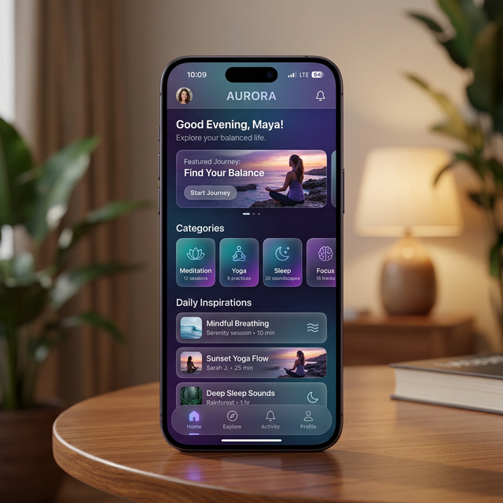

Wireframe 不僅僅是草圖，它是產品開發中最重要的溝通橋樑。在我們開始挑選顏色或是修飾圖片之前，我們必須確保產品的「邏輯」是正確的。
釐清資訊階層： 優先決定哪些資訊最重要，哪些次要。
專注於易用性： 排除設計裝飾，純粹測試使用流程是否順暢。
節省開發成本： 在程式碼寫下去之前，更改線框圖只需要幾秒鐘。
標準化元件是為了讓所有人都能「一眼看懂」邏輯
一個帶有對角線的框框，代表這裡未來會放置圖片或影片。
使用灰線或是方塊文字代表內文，避免閱讀者分散注意力去讀文字內容。
用線框代表幽靈按鈕（次要），填充代表主要按鈕，區分行動優先級。
代表選單、設定或其他功能性圖標，通常以簡單幾何圖形表示。
Best Practice
從「功能」開始，而非「外觀」
確定頁面需要哪些功能（例如：登入鈕、商品列表、篩選器）。
決定哪些功能放上面（導覽列），哪些放中間（主內容），哪些放下面（頁尾）。
先用紙筆或快速方框畫出多種佈局可能性，不要猶豫直接丟棄不合適的。
在電腦上用標準間距（如 8px 網格）讓線框圖變得更精確，放入真實字數內容。
嘗試從 A 點走到 B 點，看看中間是否有斷層或不合理的跳轉。
好的線框圖應該是「功能優先」而非「裝飾優先」
透過元素的大小和粗細來決定使用者的專注順序。在 Wireframe 中，最重要的按鈕或標題應該比其他東西更顯眼。
不要把畫面塞得太滿。留白可以幫助使用者區分不同的內容區塊，避免資訊過載。
相同功能的按鈕規格應該一致。如果「下一步」在第一頁是長方形，那在第二頁也不應該變成圓形。
確保哪些東西是可以點擊的。例如：帶有下劃線的文字通常代表連結，有陰影的方塊代表按鈕。
雖然 Wireframe、Mockup 和 Prototype 常常被混淆，但它們有著本質的區別。
當你在 Wireframe 中加入 色彩、圖片與具體的設計風格 時，它就不再只是 Wireframe，而是成為了 Mockup（視覺模型）。
「Wireframe 關注功能與結構，Mockup 關注感覺與視覺，Prototype 關注動作與交互。」
Wireframe (骨架)

Mockup (視覺)
Wireframe 是設計過程中的核心工具，它幫助團隊在耗費資源進行細節設計之前，優先解決最重要的「結構」與「流程」問題。
通常提到 Wireframe，大多數指的都是「低真度」版本。
一旦填入顏色與細節，它就進化成了 Mockup。